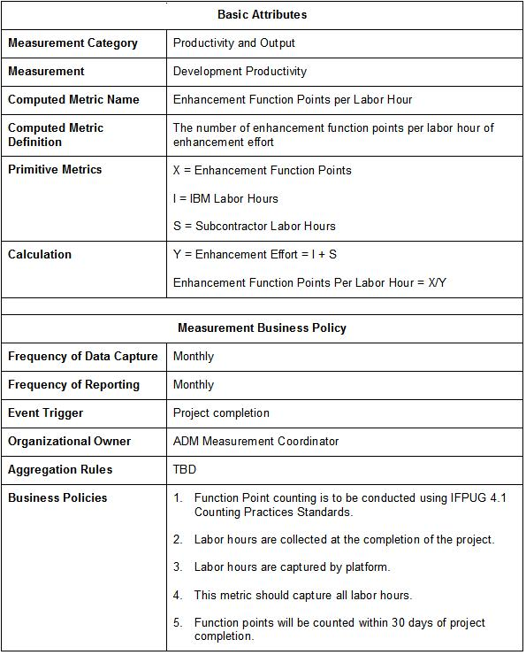

| Artifact: Measurement Business Policy (BUS 358) |
 |
|
| The Measurement Business Policy provides standard practices, which, when conformed to, enable an organization’s measurement program. The policies establish the behavioral standards for the personnel serving in the organization to ensure that measurements are "fact-based". These policies also establish an audit trail for measurements and provide a foundation for comparing actual measurement results across organizations and across industries. Adhering to sound policies will enhance the accuracy and timeliness of the measurement data being collected and reported, while also increasing the likelihood of sound business decisions based on the organizations actual performance results. |
| Main Description | The policies defined by the Measurement Business Policy document provide the standards by which each organization’s measurement program is governed. The Measurement Business Policy document also describes the implementation plan for the policies and audit considerations associated with these. |
|---|---|
| Brief Outline | This document should be considered one of the primary policies for the organization, thereby being a key part of the materials that are used to familiarize personnel with the manner in which the organization is managed. The Measurement Business Policy document should contain the following sections of information where appropriate:
The Measurement Business Policy document also addresses the client’s needs in the areas of a policy implementation plan and governance of the measurement system and the audit procedures in place to ensure audit-readiness. Hence, it should also contain:
The Measurement Business Policy Template and Accounts Measurements Template contain the content outline that is a sound basis for the Measurement Business Policy document. |
| Selected Representation | The Measurement Business Policy work product consists of a text document that should be entitled Measurement Business Policy (or have a title with similar semantics in the context of the client’s organization). Alternately, the Measurement Business Policy work product may also consist of a main text document as described above and a set of table entries as part of the computed metrics tables produced in a measurement model. An example of a computed metric table entry from a measurement model depicting the business policies specific to the computed metric is shown below. Enhancement Function Points per Labor Hour  |
| Templates | |
|---|---|
| Examples |
The following guidelines and techniques should be considered when developing the Management Business Policy document:
|
| Impact of not having | If a Measurement Business Policy is not formally documented and adhered to, the following may be impacted:
|
|---|---|
| Reasons for not needing | A Measurement Business Policy should always exist for an organization with a measurement program. The risk of not having a formal measurement business policy is too high to warrant exceptions. This work product can logically serve as the organization’s business policy (or the central nexus of the organization’s business policy) if no other organization-level methodology produces the business policy. Even if no business policy decisions are made, a Measurement Business Policy should always be developed as part of any engagement implementing a measurement program. |
| Checklists | |
|---|---|
| Guidelines | |
| Estimation Considerations |
| © Copyright IBM Corp. 1987, 2012 All Rights Reserved Property of IBM These materials are intended only for use as part of an IBM engagement |